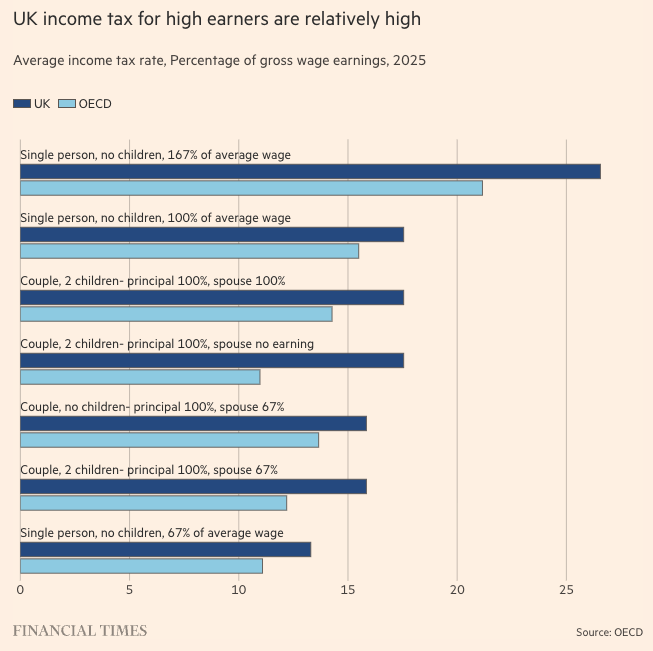

Portfolio for the Automated Data Visualisation Class (PP434) at LSE (Autumn Term, 2026/2027)
This is a chart on inflation. Chart from Richard Davies Economist Github Chart Library Data Source: OECD
This is an interesting chart on how official inflation is measured. Chart from Richard Davies Economist Github Chart Library Data Source: CPIH
Created through the Economics Observatory Data Hub
Created through the Economics Observatory Data Hub
The UK government recently scrapped the two-child limit on Universal Credit on April 6, 2026, which was in place from April 2017 Source: Save the Children.
